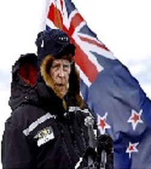
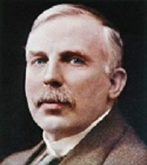
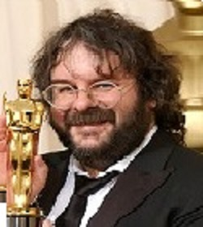
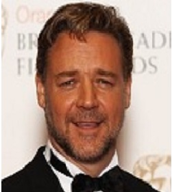
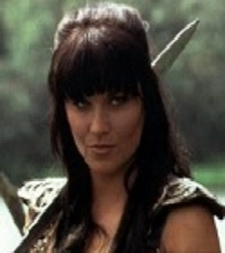
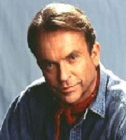

The logo for the Royal New Zealand Air Force is a kiwi- national bird of New Zealand but flightless.
The logo for the Royal New Zealand Air Force is a kiwi- national bird of New Zealand but flightless.
Organised commercial bungee jumping first began in New Zealand.
Wellington is the southernmost capital city in the world.
There are an estimated 10 sheep to every Kiwi (i.e. a New Zealander, not the bird or fruit).
a hill in Hawkes Bay, has the longest place name in the world.
The All Blacks, the NZ Rugby team start every international game with the Haka (a Maori war dance).
| Famous New Zealanders | ||
|---|---|---|
|  | Sir Edmund Hillary | (20 July 1919 – 11 January 2008) was a New Zealand mountaineer, explorer, and philanthropist. On 29 May 1953, Hillary and Nepalese Sherpa mountaineer Tenzing Norgay became the first climbers confirmed to have reached the summit of Mount Everest. |
|  | Ernest Rutherford | (30 August 1871 – 19 October 1937) was a New Zealand-born British physicist who came to be known as the father of nuclear physics. Encyclopædia Britannica considers him to be the greatest experimentalist since Michael Faraday (1791–1867). |
|  | Peter Jackson | (born 31 October 1961) is a New Zealand film director, screenwriter and film producer. He is best known as the director, writer, and producer of The Lord of the Rings trilogy (2001–03) and The Hobbit trilogy (2012–14), both of which are adapted from the novels of the same name by J. R. R. Tolkien. |
|  | Russell Crowe | (born 7 April 1964) is an actor, film producer and musician. Although a New Zealand citizen, he has lived most of his life in Australia. He came to international attention for his role as the Roman General Maximus Decimus Meridius in the 2000 historical epic film Gladiator, directed by Ridley Scott, for which Crowe won an Academy Award for Best Actor |
|  | Lucy Lawless | (born 29 March 1968) is a New Zealand actress and singer best known for playing the title character of the internationally successful television series Xena: Warrior Princess (1995–2001). |
|  | Sam Neill | (born 14 September 1947) is a New Zealand actor who first achieved leading roles in films such as Omen III: The Final Conflict, Possession, and Dead Calm and on television in Reilly, Ace of Spies. He won a broad international audience in 1993 for his roles as Alisdair Stewart in The Piano and Dr. Alan Grant in Jurassic Park, a role he reprised in 2001's Jurassic Park III. |
| Anna Paquin | (born 24 July 1982) is a New Zealand actress. Born in Manitoba and brought up in Wellington, New Zealand, Paquin studied at Hutt Intermediate School and Wellington Girls' College in New Zealand before moving to Los Angeles during her youth where she studied at Windward School and went on to complete a year at Columbia University before leaving post-secondary to focus on her acting career. | |
| Lorde | (born 7 November 1996) is a New Zealand singer, songwriter, and record producer who holds both New Zealand and Croatian citizenship. In her early teens, she signed with Universal Music Group and was later paired with songwriter and record producer Joel Little. At the age of sixteen, she released her first extended play, The Love Club EP (2012), reaching number two on the national record charts in both New Zealand and Australia. | |